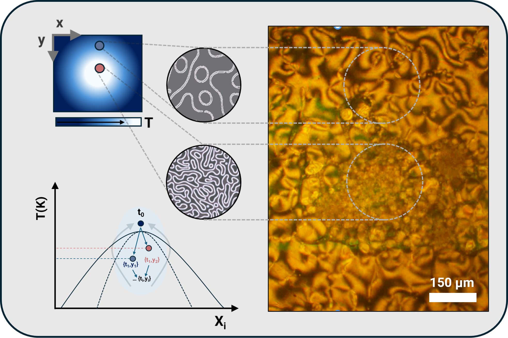
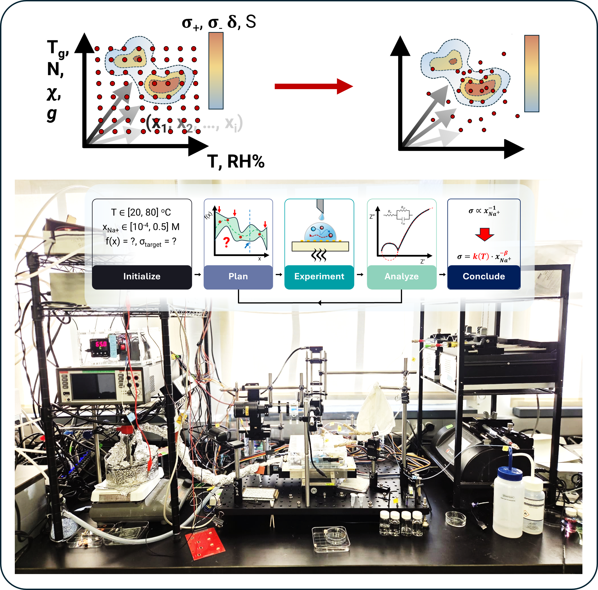
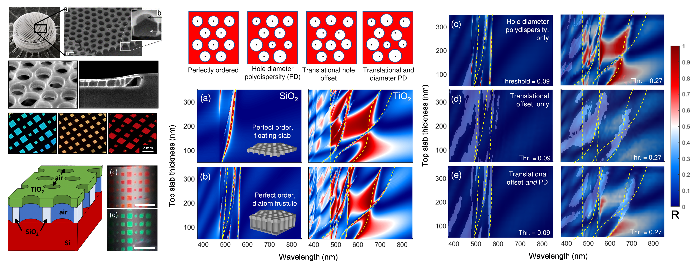
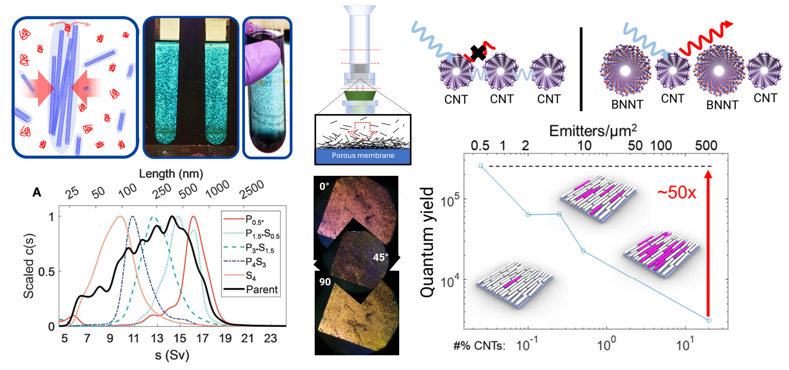

Welcome!
I'm an experimental researcher currently working in the Osuji lab at UPenn. My interests are broadly motivated by the potential of complex fluid and colloidal systems to support a sustainable, low-footprint technological future in sensing, communication, and computation. To meet this vision, I am currently developing tailored and autonomous methods to tackle two distinct yet coupled challenges in soft materials: accelerating their discovery, and influencing their behavior with unprecedented precision.
Some of the core questions my research seeks to answer:
1. What are the physico-chemical limits on our ability to orchestrate soft system structure and dynamics?
2. How do soft materials mediate colloidal interactions and assembly, and how do we resolve competing effects?
3. Moving towards applications, how do we leverage emergent soft system behaviors to transcend adherence to highly ordered and prescribed device architectures?
4. How do we integrate these insights into novel means for transducing energy and transporting matter?
Previously NASEM Postdoc Fellow @ NIST. PhD @ UCSB, supervised by Profs. Michael Gordon and Steve DenBaars.
Optofluidic patterning of soft matter
Ongoing
Precisely orchestrating the structure and dynamics of complex fluids is an outstanding challenge that, if overcome, holds exciting implications for advanced manufacturing and the natural sciences alike. Phase-separating systems are particularly rich platforms, with a poised competition of interfacial and thermodynamic forces that ultimately dictates emergent multiscale structure. Leveraging liquid-crystalline and polymeric model systems, I am developing optical approaches to drive and control phase separation on demand, as well as autonomously.
Accelerating soft materials discovery
Ongoing
Discovery and development of functional soft materials (e.g., battery electrolytes, pharmaceuticals, hydrogels) often requires traversing intractably high-dimensional parameter spaces through design, processing, and operating lifecycles. To help accelerate the elucidation and exploitation of structure-property-function relationships in soft systems, I am developing a multimodal, self-driving laboratory platform with formulation, characterization, and imaging capabilities, with a current focus on ion-conducting polymers and nanocomposites. By coupling algorithmic machinery (e.g. Bayesian optimization, agentic workflows) to automation and physically informed experimental design, I contribute to the emerging ecosystem of self-driving labs for tackling global energy and sustainability challenges.
Colloid-enabled optoelectronic and interfacial systems
Ongoing

Ensembles of nano- and microscale objects tend to, or can be encouraged to, assemble to form effective structural templates and functional device units, especially under confinement. Improved measurement and control of the properties of individual entities (e.g., colloid size & shape) can give rise to complex yet well-defined emergent behavior; moreover, my prior work has shown that interesting and useful optical behaviors can often lie within the continuum between perfect order and disorder. The resulting impact on system-level properties reveals design principles for new generations of efficient optoelectronic devices for sensing, communication, and computing.
Wide-bandgap nitride-based light-emitting materials
III-nitride heterostructures have globally revolutionized lighting and energy electronics. Routes for their growth, processing, and packaging carry important ramifications for their optoelectronic performance. I investigated how nanopatterning might (1) mitigate emission-quenching crystallographic defects in MOCVD-grown quantum-well emitters, and (2) template surface structuring that ensures light's efficient extraction out of devices.
| 2025 |
Aligned Boron Nitride Nanotube Thin Films and Their Cocomposites with Single-Wall Carbon Nanotubes through Slow Vacuum Filtration
ACS Nanoscience Au · 5, pp. 293-305.
|
| 2024 |
Universalized and robust length separation of carbon and boron nitride nanotubes with improved polymer depletion-based fractionation
RSC Advances · 14(35), pp. 25490-25506
|
| 2023 |
Extending the diatom's color palette: non-iridescent, disorder-mediated coloration in marine diatom-inspired nanomembranes
Optics Express · 31(13), pp. 21658-21671
|
Reach out!
Happy to hear from fellow researchers, potential collaborators, prospective students, or anyone interested in learning more about ongoing work.